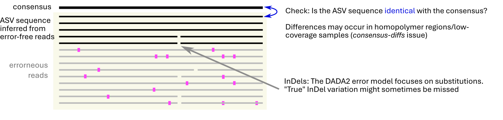

Workflow steps
workflow.RmdPipeline steps
- Search the primers and short sample indexes (located up-/downstream of the primer sequences) to group them by sample (de-multiplex); remove low-quality reads
- Infer the barcode sequences using a sequential procedure based on DADA2 and/or fixed-threshold clustering.
- Auto-assign the taxonomy and compare with the name given by morphological identification (if present) to validate and check for contamination.
- Compare with already known sequences (if present)
- Export summary table, which can be further manually curated
Primer search
It is assumed that sample-specific tags are attached to primers on both sides (dual indexing):
TAG1FPRIMERBARCODESEQUENCERPRIMERTAG2
Combining multiple amplicons is possible. Primers are searched in the order that amplicons appear in the sample sheet. Therefore, if there are nested amplicons, the shorter one should be placed at the end in the sheet.
Clustering
The basic procedure for the clustering is implemented by the infer_barcodes function. The procedure starts with DADA2 clustering, followed by consensus building. Additional steps may follow depending on whether the consensus is unambiguous (each alignment column supported by enough identical bases), or not. The workflow is illustrated in this flowchart Relevant configuration options are shown in grey.

Steps/strategies
DADA2 denoising
DADA2 is a popular program for inferring sequence variants (ASV) in amplicon sequence data. The program requires that there are least a few error-free reads present. If there is not enough replication, fixed-threshold clustering (see below) is applied instead.

The next step is to infer a consensus sequence for the ASV, which should usually be identical with the ASV sequence. Ambiguous bases in the consensus sequence are an indication of unresolved sequence variation, which we further address by attempging haplotype splitting or by more sensitive denoising (see flowchart).
Haplotype splitting
For DADA2 ASVs with an ambiguous consensus, it is checked if there are two dominant sequences (supported by a few identical sequences) serving as references for splitting the sequencing reads into two similarly abundant sub-clusters with (ideally) unambiguous sequences. The splitting is done if the total number of ambiguous bases in the two resulting consensus sequences is smaller than the number of ambiguous bases in the original consensus of all combined reads (see also non-public function try_split_haplotypes).
This simple procedure is often successful and avoids the need for repeating the DADA2 denoising with higher sensitivity, or it may help in resolve InDel variation that might not be discovered by DADA2.

Fixed-threshold clustering
Fixed-threshold clustering is applied for low-coverage samples that
don’t have enough sequence duplication (see
dada_min_identical and dada_min_n0 settings in
infer_barcodes).
By default, single-linkage is applied with a 97% identity threshold. This may result in an ambiguous consensus sequence, which can still be manually inspected.
How is the consensus sequence determined?
After DADA2 denoising, haplotype splitting and fixed-threshold
clustering, the raw (quality-filtered) reads are always aligned to the
representative sequence (ASV or dominant unique sequence) with Minimap2. The consensus
sequence is then obtained with samtools
consensus. With the default settings in infer_barcodes,
each base in the consensus sequence needs to be supported by at least
65% of the reads (weighted by quality scores) to be
unambiguous. Otherwise, an ambiguous
base is shown, which may indicate unresolved sequence variation.
The length of long homopolymer repeats is often not
very consistent between different sequencing reads, which often results
in N bases in the consensus. A simple frequency-based
approach is used to “fix” this situation: the homopolymer length is
taken from the most abundant sequence (see also non-public
function fix_homopolymers).
The correctness of the consensus is further ensured by re-mapping the reads against the consensus sequence. If necessary, this step is repeated until samtools consensus returns the same sequence in two successive rounds.
The final reported sequence is always the consensus sequence
(see also vignette("curation")). If the barcode sample has
a sufficient read depth and sequencing quality, it should usually be
unambiguous and correct. For low-depth samples with ambiguities,
alignments might be inspected manually.
Taxa grouping
Sequence variation within taxa (e.g. haplotypes) is distinguished from between-taxa variation with simple fixed-threshold single-linkage clustering done with DECIPHER (default: 97% threshold). This usually works well at least with the ITS barcode.
The most problematic case would be if there is a closely related contaminant taxon in the DNA extract, which may not be well distinghished from the target taxon.
Taxonomic assignments
Taxonomic names are automatically assigned with the the SINTAX algorithm using a reference database (see do_assign_compare_taxonomy).
Second, taxonomic names associated with the specimens are compared to the sequence-based taxonomic assignments. From this, a taxonomic overlap is calculated, which is the proportion of matching ranks in the taxonomic lineages (as far as names are defined at these levels). The lineages are retrieved from the GBIF backbone taxonomy.
Inconsistent taxonomic labels may indicate errors during the preparation or identification (or possibly the sequence-based identification), or the presence of contamination. Potential dominant contaminants are automatically flagged (see details section in do_assign_compare_taxonomy help page).